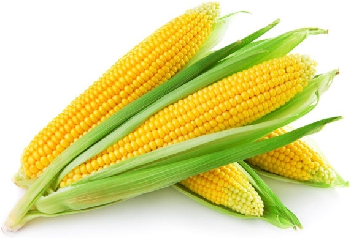

Choose a suitable field with well-drained soil. Rice requires a lot of water, so the field
should be
able to
retain water without becoming waterlogged.
Plow the field to break up the soil and create a fine seedbed.
Level the field to ensure uniform water distribution during cultivation.
Seedbed Preparation:
Prepare a seedbed either on the same field or a separate location. This is where the rice seeds
will be
sown and
germinated before transplanting.
Sow the rice seeds in rows, ensuring proper spacing.
Seed Germination:
Keep the seedbed adequately watered to facilitate germination.
Monitor the seedlings for pests and diseases, and take appropriate measures if necessary.
Nursery Maintenance:
Once the rice seedlings have reached a suitable height (usually a few inches), they are ready
for
transplanting.
Maintain the nursery by providing sufficient water and protecting the seedlings from pests.
Transplanting:
Transplant the seedlings from the nursery to the main field. This is typically done when the
seedlings
have 3-4
leaves.
Ensure proper spacing between the transplanted seedlings to allow for healthy growth.
Water Management:
Rice requires a lot of water for optimal growth. Maintain a consistent water level in the field,
especially
during the growing season.
In some cases, farmers use traditional flood irrigation methods, while others may use more modern
techniques
such as drip or sprinkler irrigation.
Fertilization:
Apply fertilizers based on soil testing and the specific nutrient requirements of rice. Common
fertilizers
include nitrogen, phosphorus, and potassium.
Harvesting:
Harvesting is typically done when the rice grains have matured and turned golden brown.
Use sickles or combine harvesters for large-scale operations.
Drying and Threshing:
Dry the harvested rice in the sun or using mechanical dryers.
Once dried, thresh the rice to separate the grains from the straw.
Milling and Storage:
Mill the rice to remove the outer husk, bran, and germ.
Store the processed rice in a cool, dry place.
हिंदी
भूमि की तैयारी:
अच्छी जल निकास वाली मिट्टी वाला उपयुक्त खेत चुनें। चावल के लिए बहुत अधिक पानी की आवश्यकता
होती है,
इसलिए खेत
को जलभराव के बिना पानी बनाए रखने में सक्षम होना चाहिए।
मिट्टी को तोड़ने और बढ़िया बीजभूमि बनाने के लिए खेत की जुताई करें।
खेती के दौरान समान जल वितरण सुनिश्चित करने के लिए खेत को समतल करें।
बीज तैयार करना:
उ
सी खेत में या अलग स्थान पर बीज क्यारी तैयार करें। यहीं पर चावल के बीज बोए जाएंगे और रोपाई
से पहले
अंकुरित किए
जाएंगे।
उचित दूरी सुनिश्चित करते हुए, चावल के बीज पंक्तियों में बोएं।
बीज अंकुरण:
अंकुरण को सुविधाजनक बनाने के लिए बीज क्यारी को पर्याप्त पानी देते रहें।
कीटों और बीमारियों के लिए पौध की निगरानी करें और यदि आवश्यक हो तो उचित उपाय करें।
नर्सरी रखरखाव:
एक बार जब चावल के पौधे उपयुक्त ऊंचाई (आमतौर पर कुछ इंच) तक पहुंच जाते हैं, तो वे रोपाई के
लिए तैयार हो
जाते
हैं।
पर्याप्त पानी उपलब्ध कराकर और पौधों को कीटों से बचाकर नर्सरी का रखरखाव करें।
प्रत्यारोपण:
पौध को नर्सरी से मुख्य खेत में रोपें। यह आमतौर पर तब किया जाता है जब पौधों में 3-4 पत्तियाँ
हों।
स्वस्थ विकास के लिए प्रत्यारोपित पौधों के बीच उचित दूरी सुनिश्चित करें।
जल प्रबंधन:
चावल के सर्वोत्तम विकास के लिए बहुत अधिक पानी की आवश्यकता होती है। खेत में लगातार जल स्तर
बनाए रखें,
खासकर
बढ़ते मौसम के दौरान।
कुछ मामलों में, किसान पारंपरिक बाढ़ सिंचाई विधियों का उपयोग करते हैं, जबकि अन्य अधिक आधुनिक तकनीकों
जैसे ड्रिप
या स्प्रिंकलर सिंचाई का उपयोग कर सकते हैं।
निषेचन:
मिट्टी परीक्षण और चावल की विशिष्ट पोषक तत्वों की आवश्यकताओं के आधार पर उर्वरकों का प्रयोग
करें।
सामान्य
उर्वरकों में नाइट्रोजन, फास्फोरस और पोटेशियम शामिल हैं।
खरपतवार नियंत्रण:
चावल के खेत को खरपतवारों से मुक्त रखें, क्योंकि वे पोषक तत्वों और सूरज की रोशनी के लिए चावल
के पौधों
से
प्रतिस्पर्धा कर सकते हैं।
खरपतवार नियंत्रण के लिए हाथ से निराई-गुड़ाई या शाकनाशी का उपयोग किया जा सकता है।
कीट एवं रोग प्रबंधन:
कीटों और बीमारियों के लिए फसल की नियमित निगरानी करें।
आवश्यकतानुसार कीटनाशक या अन्य नियंत्रण उपाय लागू करें।
कटाई:
कटाई आमतौर पर तब की जाती है जब चावल के दाने परिपक्व हो जाएं और सुनहरे भूरे रंग के हो जाएं।
बड़े पैमाने पर कार्यों के लिए दरांती या कंबाइन हार्वेस्टर का उपयोग करें।
सुखाना और गहाई करना:
कटे हुए चावल को धूप में या यांत्रिक ड्रायर का उपयोग करके सुखाएं।
एक बार सूख जाने पर, चावल को भूसे से अनाज को अलग करने के लिए पीस लें।
मिलिंग और भंडारण:
बाहरी भूसी, चोकर और रोगाणु को हटाने के लिए चावल को पीस लें।
प्रसंस्कृत चावल को ठंडी, सूखी जगह पर रखें।
सुनना
2. CUMIN / 2. जीरे
ENGLISH
Land Preparation:
Choose well-drained sandy loam soils with good organic content.
Plow the land to a fine tilth, ensuring a loose and friable soil structure.
Seed Selection:
Select quality cumin seeds from a reliable source.
Treat seeds with recommended fungicides before sowing to prevent diseases.
Sowing:
Optimal time for sowing is during the Rabi season, typically from October to November.
Sow seeds directly in the prepared beds or rows, maintaining proper spacing.
Irrigation:
Provide regular and consistent irrigation, especially during the germination and flowering stages.
Avoid waterlogging, as cumin plants are susceptible to root diseases.
Weed Management:
Keep the field free from weeds to reduce competition for nutrients and water.
Hand weeding or use recommended herbicides as needed.
Fertilization:
Apply well-balanced fertilizers, incorporating organic manure if available.
Split the fertilizer application to meet the nutritional requirements at different growth stages.
Pest and Disease Control:
Monitor for pests like aphids and diseases such as blight.
Apply recommended pesticides or fungicides when necessary.
Harvesting:
Harvest cumin plants when the seeds have matured and the plant has dried.
Cut the plants close to the ground and gather them for drying.
Drying and Threshing:
Allow the harvested plants to dry in a well-ventilated area.
Thresh the dried plants to separate the seeds from the stems.
Cleaning and Grading:
Clean the harvested seeds to remove any impurities.
Grade the cumin seeds based on size and quality.
Storage:
Store the graded cumin seeds in a cool, dry place in proper containers to maintain quality.
हिंदी
भूमि की तैयारी:
अच्छी जैविक सामग्री वाली अच्छी जल निकास वाली बलुई दोमट मिट्टी चुनें।
भूमि को अच्छी तरह से जुताई करें, जिससे मिट्टी की संरचना ढीली और भुरभुरी हो जाए।
बीज चयन:
किसी विश्वसनीय स्रोत से गुणवत्तापूर्ण जीरा चुनें।
बीमारियों से बचाव के लिए बुआई से पहले बीजों को अनुशंसित फफूंदनाशकों से उपचारित करें।
बुआई:
बुआई का सर्वोत्तम समय रबी मौसम के दौरान होता है, आमतौर पर अक्टूबर से नवंबर तक।
उचित दूरी बनाए रखते हुए बीज सीधे तैयार क्यारियों या पंक्तियों में बोएं।
सिंचाई:
नियमित और निरंतर सिंचाई प्रदान करें, विशेषकर अंकुरण और फूल आने की अवस्था के दौरान।
जलभराव से बचें, क्योंकि जीरे के पौधे जड़ रोगों के प्रति संवेदनशील होते हैं।
खरपतवार प्रबंधन:
पोषक तत्वों और पानी के लिए प्रतिस्पर्धा कम करने के लिए खेत को खरपतवार से मुक्त रखें।
आवश्यकतानुसार हाथ से निराई-गुड़ाई करें या अनुशंसित शाकनाशियों का उपयोग करें।
निषेचन:
यदि उपलब्ध हो तो जैविक खाद को शामिल करते हुए, अच्छी तरह से संतुलित उर्वरक लागू करें।
विभिन्न विकास चरणों में पोषण संबंधी आवश्यकताओं को पूरा करने के लिए उर्वरक अनुप्रयोग को विभाजित करें।
कीट एवं रोग नियंत्रण:
एफिड्स जैसे कीटों और ब्लाइट जैसी बीमारियों की निगरानी करें।
आवश्यकता पड़ने पर अनुशंसित कीटनाशकों या कवकनाशी का प्रयोग करें।
कटाई:
जीरे के पौधों की कटाई तब करें जब बीज पक जाएं और पौधा सूख जाए।
पौधों को ज़मीन के पास से काटें और सूखने के लिए इकट्ठा करें।
सुखाना और गहाई करना:
काटे गए पौधों को अच्छे हवादार क्षेत्र में सूखने दें।
बीज को तनों से अलग करने के लिए सूखे पौधों की गहाई करें।
सफाई और ग्रेडिंग:
किसी भी प्रकार की अशुद्धियाँ दूर करने के लिए काटे गए बीजों को साफ करें।
आकार और गुणवत्ता के आधार पर जीरे को ग्रेड करें।
भंडारण:
गुणवत्ता बनाए रखने के लिए श्रेणीबद्ध जीरे को ठंडे, सूखे स्थान पर उचित कंटेनर में रखें।
सुनना
3. JUTE / 3. जूट
ENGLISH
Land Preparation:
Choose well-drained soil with good fertility for jute cultivation.
Plough the land thoroughly to prepare a fine tilth.
Incorporate organic manure to enhance soil fertility.
Sowing:
Jute is typically grown from seeds.
Sow jute seeds directly in the prepared field at the beginning of the monsoon season.
Spacing:
Maintain proper spacing between rows and plants to allow for healthy growth.
Weeding:
Control weeds during the early stages of growth to reduce competition for nutrients.
Manual weeding or the use of herbicides may be employed.
Irrigation:
Jute requires regular and adequate irrigation, especially during dry periods.
Proper water management is crucial for optimal fiber quality.
Harvesting:
Jute plants are ready for harvesting in about 120 to 150 days after sowing.
Harvesting is done when the plants are in full bloom but before the flowers shed.
Cut the plants close to the ground.
Retting:
The harvested jute stalks undergo retting, a process where they are soaked in water to facilitate the
separation of fibers from the woody stalk.
This can be done through either water retting or microbial retting.
Stripping and Bundling:
After retting, the fibers are stripped from the jute stalks.
The fibers are then washed, dried, and bundled for further processing.
Baling:
The jute fibers are compressed into bales for transportation and storage.
Processing:
Jute fibers can be processed further to produce different jute products, including bags, textiles, and
carpets.
Marketing:
The processed jute products are sold in the market, either directly or through intermediaries.
हिंदी
भूमि की तैयारी:
जूट की खेती के लिए अच्छी उर्वरता वाली अच्छी जल निकास वाली मिट्टी चुनें।
बारीक जुताई तैयार करने के लिए भूमि की अच्छी तरह जुताई करें।
मिट्टी की उर्वरता बढ़ाने के लिए जैविक खाद को शामिल करें।
बुआई:
जूट आमतौर पर बीजों से उगाया जाता है।
मानसून के मौसम की शुरुआत में जूट के बीज सीधे तैयार खेत में बोएं।
रिक्ति:
स्वस्थ विकास के लिए पंक्तियों और पौधों के बीच उचित दूरी बनाए रखें।
निराई-गुड़ाई:
पोषक तत्वों के लिए प्रतिस्पर्धा को कम करने के लिए विकास के प्रारंभिक चरण के दौरान खरपतवारों पर
नियंत्रण रखें।
मैनुअल निराई या शाकनाशी का उपयोग नियोजित किया जा सकता है।
सिंचाई:
जूट को नियमित और पर्याप्त सिंचाई की आवश्यकता होती है, विशेषकर शुष्क अवधि के दौरान।
इष्टतम फाइबर गुणवत्ता के लिए उचित जल प्रबंधन महत्वपूर्ण है।
कटाई:
जूट के पौधे बुआई के लगभग 120 से 150 दिन में कटाई के लिए तैयार हो जाते हैं.
कटाई तब की जाती है जब पौधे पूरी तरह खिल जाते हैं लेकिन फूल गिरने से पहले।
पौधों को ज़मीन के पास से काटें.
रेटिंग:
काटे गए जूट के डंठलों को सड़न से गुजरना पड़ता है, एक ऐसी प्रक्रिया जहां लकड़ी के डंठल से रेशों को
अलग करने की सुविधा के लिए उन्हें पानी में भिगोया जाता है।
यह जल रेटिंग या माइक्रोबियल रेटिंग के माध्यम से किया जा सकता है।
स्ट्रिपिंग और बंडलिंग:
रेटिंग के बाद, जूट के डंठल से रेशे अलग कर लिए जाते हैं।
फिर रेशों को धोया जाता है, सुखाया जाता है और आगे की प्रक्रिया के लिए बंडल किया जाता है।
बालिंग:
परिवहन और भंडारण के लिए जूट के रेशों को गांठों में संपीड़ित किया जाता है।
प्रसंस्करण:
जूट के रेशों को बैग, कपड़ा और कालीन सहित विभिन्न जूट उत्पाद बनाने के लिए आगे संसाधित किया जा सकता
है।
विपणन:
प्रसंस्कृत जूट उत्पाद सीधे या बिचौलियों के माध्यम से बाजार में बेचे जाते हैं।
सुनना
4. SUGARCANE / 4.गन्ने
ENGLISH
Land Preparation:
Choose well-drained and fertile soil for sugarcane cultivation.
Plough the land and prepare a fine seedbed.
Incorporate organic manure or fertilizers to enhance soil fertility.
Planting:
Sugarcane is typically propagated through stem cuttings known as setts.
Setts are planted in furrows or pits at the recommended spacing.
Spacing:
Maintain proper spacing between rows and setts to allow for healthy growth and easy cultivation.
Fertilization:
Apply fertilizers based on soil nutrient analysis to promote healthy cane growth.
Fertilizers are usually applied in split doses during the growing season.
Irrigation:
Sugarcane requires regular and consistent irrigation, especially during dry periods.
Proper water management is crucial for high sugar content in the cane.
Weed Control:
Control weeds through manual or mechanical methods to reduce competition for nutrients.
Earthing Up:
Earthing up involves covering the base of the sugarcane plants with soil to provide stability and
support.
Pest and Disease Control:
Implement measures to control pests and diseases affecting sugarcane, such as the sugarcane borer and
various fungal infections.
Harvesting:
Sugarcane is ready for harvesting about 10-18 months after planting, depending on the variety and
climatic conditions.
Harvesting is usually done manually using machetes or mechanical harvesters.
Transport to Sugar Mill:
Transport the harvested sugarcane to the sugar mill for processing.
Larger plantations may have their own milling facilities.
Processing:
At the sugar mill, sugarcane undergoes crushing to extract juice.
The juice is then processed to separate sugar crystals from the liquid.
Boiling and Refining:
The extracted sugar juice undergoes boiling and refining processes to produce raw sugar.
Packaging and Distribution:
The refined sugar is packaged into various forms (granulated, powdered, etc.) and distributed to
markets.
हिंदी
भूमि की तैयारी:
गन्ने की खेती के लिए अच्छी जल निकासी वाली और उपजाऊ मिट्टी चुनें।
भूमि की जुताई करें और अच्छी क्यारी तैयार करें।
मिट्टी की उर्वरता बढ़ाने के लिए जैविक खाद या उर्वरकों को शामिल करें।
रोपण:
गन्ने का प्रचार आमतौर पर तने की कलमों के माध्यम से किया जाता है जिन्हें सेट्स कहा जाता है।
सेट्स को अनुशंसित दूरी पर नाली या गड्ढों में लगाया जाता है।
रिक्ति:
स्वस्थ विकास और आसान खेती के लिए पंक्तियों और समूहों के बीच उचित दूरी बनाए रखें।
निषेचन:
गन्ने की स्वस्थ वृद्धि को बढ़ावा देने के लिए मिट्टी के पोषक तत्व विश्लेषण के आधार पर उर्वरकों का
प्रयोग करें।
बढ़ते मौसम के दौरान उर्वरकों को आमतौर पर विभाजित खुराकों में लगाया जाता है।
सिंचाई:
गन्ने को नियमित और निरंतर सिंचाई की आवश्यकता होती है, विशेषकर शुष्क अवधि के दौरान।
गन्ने में उच्च चीनी सामग्री के लिए उचित जल प्रबंधन महत्वपूर्ण है।
खरपतवार नियंत्रण:
पोषक तत्वों के लिए प्रतिस्पर्धा को कम करने के लिए मैन्युअल या यांत्रिक तरीकों से खरपतवारों को
नियंत्रित करें।
मिट्टी भरना:
मिट्टी लगाने में स्थिरता और समर्थन प्रदान करने के लिए गन्ने के पौधों के आधार को मिट्टी से ढंकना
शामिल है।
कीट एवं रोग नियंत्रण:
गन्ने को प्रभावित करने वाले कीटों और बीमारियों, जैसे गन्ना छेदक और विभिन्न कवक संक्रमणों को
नियंत्रित करने के उपाय लागू करें।
कटाई:
किस्म और जलवायु परिस्थितियों के आधार पर, गन्ना रोपण के लगभग 10-18 महीने बाद कटाई के लिए तैयार हो
जाता है।
कटाई आम तौर पर छुरी या यांत्रिक हार्वेस्टर का उपयोग करके मैन्युअल रूप से की जाती है।
चीनी मिल तक परिवहन:
कटे हुए गन्ने को प्रसंस्करण के लिए चीनी मिल तक पहुँचाएँ।
बड़े बागानों की अपनी मिलिंग सुविधाएं हो सकती हैं।
प्रसंस्करण:
चीनी मिल में रस निकालने के लिए गन्ने की पेराई की जाती है।
फिर तरल से चीनी के क्रिस्टल को अलग करने के लिए रस को संसाधित किया जाता है।
उबालना और परिष्कृत करना:
निकाले गए चीनी के रस को कच्ची चीनी बनाने के लिए उबालने और परिष्कृत करने की प्रक्रिया से गुजरना पड़ता
है।
पैकेजिंग और वितरण:
परिष्कृत चीनी को विभिन्न रूपों (दानेदार, पाउडर, आदि) में पैक किया जाता है और बाजारों में वितरित किया
जाता है।
सुनना
5. LENTILS / 5. मसूर
ENGLISH
Land Preparation:
Choose well-drained loamy soils with good fertility for lentil cultivation.
Plow the land to break the soil and create a fine seedbed.
Seed Selection:
Select high-quality lentil seeds from a reliable source.
Treat the seeds with recommended fungicides to prevent seed-borne diseases.
Sowing:
The optimal time for sowing lentils is during the Rabi season, typically from October to December.
Sow the seeds directly in rows or beds, maintaining proper spacing.
Irrigation:
Provide adequate irrigation, especially during the flowering and pod-filling stages.
Lentils are sensitive to waterlogging, so ensure proper drainage.
Fertilization:
Apply well-balanced fertilizers based on soil nutrient analysis.
Incorporate organic matter or compost for improved soil fertility.
Weed Management:
Keep the field weed-free to reduce competition for nutrients and water.
Manual weeding or use recommended herbicides as needed.
Pest and Disease Control:
Monitor for pests such as aphids and diseases like rust or blight.
Apply appropriate pesticides or fungicides when necessary.
Harvesting:
Harvest lentils when the plants have matured, and the pods have turned brown.
Cut the plants close to the ground to collect both the plants and pods.
Drying and Threshing:
Allow the harvested lentil plants to dry in a well-ventilated area.
Thresh the dried plants to separate the lentil seeds from the pods.
Cleaning and Grading:
Clean the harvested lentil seeds to remove any impurities.
Grade the lentils based on size and quality.
Storage:
Store the graded lentils in a cool, dry place in suitable containers to maintain quality.
हिंदी
और तैयारी:
मसूर की खेती के लिए अच्छी जल निकास वाली अच्छी उर्वरता वाली दोमट मिट्टी चुनें।
मिट्टी को तोड़ने और बढ़िया बीजभूमि बनाने के लिए भूमि की जुताई करें।
बीज चयन:
किसी विश्वसनीय स्रोत से उच्च गुणवत्ता वाले मसूर के बीज का चयन करें।
बीज जनित रोगों से बचाव के लिए बीजों को अनुशंसित फफूंदनाशकों से उपचारित करें।
बुआई:
मसूर की बुआई का सबसे उपयुक्त समय रबी मौसम के दौरान होता है, आमतौर पर अक्टूबर से दिसंबर तक।
उचित दूरी बनाए रखते हुए बीज सीधे पंक्तियों या क्यारियों में बोएं।
सिंचाई:
पर्याप्त सिंचाई प्रदान करें, विशेषकर फूल आने और फली भरने के चरण के दौरान।
मसूर की फसलें जलभराव के प्रति संवेदनशील होती हैं, इसलिए उचित जल निकासी सुनिश्चित करें।
निषेचन:
मिट्टी के पोषक तत्व विश्लेषण के आधार पर अच्छी तरह से संतुलित उर्वरक लागू करें।
मिट्टी की उर्वरता में सुधार के लिए जैविक पदार्थ या खाद शामिल करें।
खरपतवार प्रबंधन:
पोषक तत्वों और पानी के लिए प्रतिस्पर्धा कम करने के लिए खेत को खरपतवार मुक्त रखें।
आवश्यकतानुसार हाथ से निराई-गुड़ाई करें या अनुशंसित शाकनाशियों का उपयोग करें।
कीट एवं रोग नियंत्रण:
एफिड्स जैसे कीटों और जंग या ब्लाइट जैसी बीमारियों की निगरानी करें।
आवश्यकता पड़ने पर उचित कीटनाशक या फफूंदनाशी का प्रयोग करें।
कटाई:
मसूर की कटाई तब करें जब पौधे परिपक्व हो जाएं और फलियां भूरे रंग की हो जाएं।
पौधे और फलियाँ दोनों इकट्ठा करने के लिए पौधों को ज़मीन के करीब से काटें।
सुखाना और गहाई करना:
काटे गए मसूर के पौधों को अच्छी तरह हवादार क्षेत्र में सूखने दें।
मसूर के बीज को फली से अलग करने के लिए सूखे पौधों को पीस लें।
सफाई और ग्रेडिंग:
किसी भी प्रकार की अशुद्धियाँ दूर करने के लिए काटे गए मसूर के बीजों को साफ करें।
दाल को आकार और गुणवत्ता के आधार पर वर्गीकृत करें।
भंडारण:
गुणवत्ता बनाए रखने के लिए श्रेणीबद्ध दालों को उपयुक्त कंटेनरों में ठंडी, सूखी जगह पर रखें।
सुनना
6. MUSTARD / 6. सरसों
ENGLISH
Land Preparation:
Choose well-drained soil with good fertility for mustard cultivation.
Plough the land and prepare a fine seedbed.
Incorporate organic manure or fertilizers to enhance soil fertility.
Seed Selection and Sowing:
Select high-quality mustard seeds for planting.
Sow mustard seeds directly in the field or use nursery beds for transplants.
Spacing:
Maintain proper spacing between rows and plants to allow for healthy growth and easy cultivation.
Fertilization:
Apply fertilizers based on soil nutrient analysis to promote healthy mustard plant growth.
Fertilizers are typically applied before or at the time of sowing.
Irrigation:
Mustard requires regular and consistent irrigation, especially during dry periods.
Proper water management is crucial for optimal seed and oil yield.
Weeding:
Control weeds during the early stages of growth to reduce competition for nutrients.
Manual weeding or the use of herbicides may be employed.
Pest and Disease Control:
Monitor for pests like aphids and diseases like white rust.
Implement measures such as insecticides or fungicides if necessary.
Flowering and Pod Formation:
Mustard plants flower, and pods start to form after successful pollination.
Flowering typically occurs within 30 to 50 days after sowing, depending on the variety.
Harvesting:
Mustard plants are ready for harvesting when the pods turn yellow, and seeds inside the pods are mature.
Harvest the plants by cutting them close to the ground.
Threshing:
Separate the seeds from the pods through threshing.
Threshing can be done manually or using mechanized equipment.
Drying:
Allow the harvested seeds to dry to reduce moisture content.
Cleaning and Grading:
Clean and grade the dried seeds to remove impurities and ensure uniform quality.
Packaging:
Package the cleaned and graded mustard seeds for storage or sale.
Oil Extraction:
Mustard seeds can be used for oil extraction, and the oil is commonly used in cooking.
हिंदी
भूमि की तैयारी:
सरसों की खेती के लिए अच्छी उर्वरता वाली अच्छी जल निकास वाली मिट्टी चुनें।
भूमि की जुताई करें और अच्छी क्यारी तैयार करें।
मिट्टी की उर्वरता बढ़ाने के लिए जैविक खाद या उर्वरकों को शामिल करें।
बीज का चयन एवं बुआई:
रोपण के लिए उच्च गुणवत्ता वाले सरसों के बीज का चयन करें।
सरसों के बीज सीधे खेत में बोएं या रोपाई के लिए नर्सरी बेड का उपयोग करें।
रिक्ति:
स्वस्थ विकास और आसान खेती के लिए पंक्तियों और पौधों के बीच उचित दूरी बनाए रखें।
निषेचन:
स्वस्थ सरसों के पौधे के विकास को बढ़ावा देने के लिए मिट्टी के पोषक तत्व विश्लेषण के आधार पर उर्वरकों
का प्रयोग करें।
उर्वरक आमतौर पर बुआई से पहले या उसके समय लगाए जाते हैं।
सिंचाई:
सरसों को नियमित और लगातार सिंचाई की आवश्यकता होती है, खासकर शुष्क अवधि के दौरान।
इष्टतम बीज और तेल उपज के लिए उचित जल प्रबंधन महत्वपूर्ण है।
निराई-गुड़ाई:
पोषक तत्वों के लिए प्रतिस्पर्धा को कम करने के लिए विकास के प्रारंभिक चरण के दौरान खरपतवारों पर
नियंत्रण रखें।
मैनुअल निराई या शाकनाशी का उपयोग नियोजित किया जा सकता है।
कीट एवं रोग नियंत्रण:
एफिड्स जैसे कीटों और सफेद रतुआ जैसी बीमारियों की निगरानी करें।
यदि आवश्यक हो तो कीटनाशक या कवकनाशी जैसे उपाय लागू करें।
फूल आना और फली बनना:
सफल परागण के बाद सरसों के पौधों में फूल आते हैं और फलियाँ बनने लगती हैं।
किस्म के आधार पर, आमतौर पर बुआई के 30 से 50 दिनों के भीतर फूल आते हैं।
कटाई:
सरसों के पौधे तब कटाई के लिए तैयार हो जाते हैं जब फलियाँ पीली हो जाती हैं और फलियों के अंदर के बीज
परिपक्व हो जाते हैं।
पौधों को जमीन के करीब से काटकर कटाई करें।
थ्रेशिंग:
थ्रेसिंग द्वारा बीज को फली से अलग कर लें।
थ्रेसिंग मैन्युअल रूप से या मशीनीकृत उपकरण का उपयोग करके की जा सकती है।
सुखाना:
नमी की मात्रा कम करने के लिए काटे गए बीजों को सूखने दें।
सफाई और ग्रेडिंग:
अशुद्धियों को दूर करने और एक समान गुणवत्ता सुनिश्चित करने के लिए सूखे बीजों को साफ और वर्गीकृत करें।
पैकेजिंग:
भंडारण या बिक्री के लिए साफ और श्रेणीबद्ध सरसों के बीजों को पैकेज करें।
तेल निकासी:
सरसों के बीज का उपयोग तेल निकालने के लिए किया जा सकता है, और तेल का उपयोग आमतौर पर खाना पकाने में
किया जाता है।
सुनना
7. MAIZE / 7. मक्के

ENGLISH
Land Preparation:
Choose well-drained soils with good fertility for maize cultivation.
Plow the land and prepare a fine seedbed.
Seed Selection:
Select high-quality maize seeds suitable for the local climate.
Treat seeds with recommended fungicides to prevent diseases.
Sowing:
The optimal time for sowing maize is during the Kharif season, typically from June to July.
Sow seeds directly in rows, ensuring proper spacing.
Irrigation:
Provide regular and adequate irrigation, especially during the critical stages like flowering and grain
filling.
Maize requires consistent moisture for optimal growth.
Fertilization:
Apply well-balanced fertilizers based on soil nutrient requirements.
Incorporate organic matter or compost to enhance soil fertility.
Weed Management:
Keep the field weed-free, particularly during the initial growth stages.
Manual weeding or use recommended herbicides as needed.
Pest and Disease Control:
Monitor for pests such as armyworms and diseases like rust.
Apply appropriate pesticides or fungicides when necessary.
Harvesting:
Harvest maize when the ears have matured, and the kernels are fully developed.
Check for signs of maturity, such as dried husks and brown silks.
Drying:
Allow the harvested maize to dry in the field until the moisture content is suitable for storage.
Shelling:
Remove the kernels from the cobs through the shelling process.
Cleaning and Storage:
Clean the maize to remove debris and damaged kernels.
Store the maize in suitable conditions to prevent moisture and pest damage.
हिंदी
भूमि की तैयारी:
मक्के की खेती के लिए अच्छी उर्वरता वाली अच्छी जल निकास वाली मिट्टी चुनें।
भूमि की जुताई करें और अच्छी क्यारी तैयार करें।
बीज चयन:
स्थानीय जलवायु के लिए उपयुक्त उच्च गुणवत्ता वाले मक्के के बीज का चयन करें।
रोगों से बचाव के लिए अनुशंसित फफूंदनाशकों से बीजों का उपचार करें।
बुआई:
मक्के की बुआई का सर्वोत्तम समय ख़रीफ़ सीज़न के दौरान होता है, आमतौर पर जून से जुलाई तक।
उचित दूरी सुनिश्चित करते हुए बीज सीधे पंक्तियों में बोएं।
सिंचाई:
नियमित और पर्याप्त सिंचाई प्रदान करें, विशेष रूप से फूल आने और दाना भरने जैसी महत्वपूर्ण अवस्थाओं के
दौरान।
मक्के की सर्वोत्तम वृद्धि के लिए लगातार नमी की आवश्यकता होती है।
निषेचन:
मिट्टी की पोषक तत्वों की आवश्यकता के आधार पर अच्छी तरह से संतुलित उर्वरक लागू करें।
मिट्टी की उर्वरता बढ़ाने के लिए जैविक पदार्थ या खाद शामिल करें।
खरपतवार प्रबंधन:
खेत को खरपतवार मुक्त रखें, विशेषकर शुरुआती विकास चरणों के दौरान।
आवश्यकतानुसार हाथ से निराई-गुड़ाई करें या अनुशंसित शाकनाशियों का उपयोग करें।
कीट एवं रोग नियंत्रण:
आर्मीवर्म जैसे कीटों और जंग जैसी बीमारियों की निगरानी करें।
आवश्यकता पड़ने पर उचित कीटनाशक या फफूंदनाशी का प्रयोग करें।
कटाई:
मक्के की कटाई तब करें जब बालियां पक जाएं और दाने पूरी तरह विकसित हो जाएं।
परिपक्वता के लक्षणों की जाँच करें, जैसे सूखी भूसी और भूरे रेशम।
सुखाना:
कटे हुए मक्के को तब तक खेत में सूखने दें जब तक नमी की मात्रा भंडारण के लिए उपयुक्त न हो जाए।
गोलाबारी:
छिलका उतारने की प्रक्रिया के माध्यम से भुट्टों से गुठलियाँ निकालें।
सफाई और भंडारण:
मलबे और क्षतिग्रस्त दानों को हटाने के लिए मक्के को साफ करें।
नमी और कीटों से होने वाले नुकसान को रोकने के लिए मक्के को उपयुक्त परिस्थितियों में संग्रहित करें।
सुनना
8. WHEAT / 8. गेहूं
ENGLISH
Land Preparation:
Choose well-drained loamy soils with good fertility for wheat cultivation.
Plow the land thoroughly to create a fine seedbed.
Seed Selection:
Select high-quality wheat seeds adapted to local conditions.
Treat seeds with fungicides to prevent soil-borne diseases.
Sowing:
Optimal time for sowing wheat is during the Rabi season, usually from November to December.
Sow seeds in rows, ensuring proper spacing.
Irrigation:
Provide sufficient irrigation, especially during critical stages like tillering and flowering.
Wheat requires moisture for optimal growth and grain development.
Fertilization:
Apply well-balanced fertilizers, considering the soil nutrient requirements.
Incorporate organic matter or compost for improved soil fertility.
Weed Management:
Keep the field free from weeds to reduce competition for nutrients and water.
Manual weeding or use recommended herbicides as needed.
Pest and Disease Control:
Monitor for pests like aphids and diseases such as rust.
Apply recommended pesticides or fungicides when necessary.
Harvesting:
Harvest wheat when the crop has reached physiological maturity, indicated by a golden color and hard
grains.
Use a combine harvester or manually cut and thresh the crop.
Drying:
Allow the harvested wheat to dry in the field or through mechanical drying until it reaches a suitable
moisture content for storage.
Cleaning and Grading:
Clean the harvested wheat to remove debris and chaff.
Grade the wheat based on size and quality.
Storage:
Store the graded wheat in suitable conditions to prevent moisture, insect, and rodent damage.
हिंदी
भूमि की तैयारी:
गेहूं की खेती के लिए अच्छी जल निकास वाली अच्छी उर्वरता वाली दोमट मिट्टी चुनें।
अच्छी बीजभूमि तैयार करने के लिए भूमि की अच्छी तरह जुताई करें।
बीज चयन:
स्थानीय परिस्थितियों के अनुकूल उच्च गुणवत्ता वाले गेहूं के बीज का चयन करें।
मृदा जनित रोगों से बचाव के लिए बीजों को फफूंदनाशकों से उपचारित करें।
बुआई:
गेहूं की बुआई का सबसे उपयुक्त समय रबी मौसम के दौरान होता है, आमतौर पर नवंबर से दिसंबर तक।
उचित दूरी सुनिश्चित करते हुए, पंक्तियों में बीज बोएं।
सिंचाई:
पर्याप्त सिंचाई प्रदान करें, विशेष रूप से कल्ले फूटने और फूल आने जैसी महत्वपूर्ण अवस्थाओं के दौरान।
गेहूं की सर्वोत्तम वृद्धि और अनाज के विकास के लिए नमी की आवश्यकता होती है।
निषेचन:
मिट्टी की पोषक तत्वों की आवश्यकताओं को ध्यान में रखते हुए, अच्छी तरह से संतुलित उर्वरक लागू करें।
मिट्टी की उर्वरता में सुधार के लिए जैविक पदार्थ या खाद शामिल करें।
खरपतवार प्रबंधन:
पोषक तत्वों और पानी के लिए प्रतिस्पर्धा कम करने के लिए खेत को खरपतवार से मुक्त रखें।
आवश्यकतानुसार हाथ से निराई-गुड़ाई करें या अनुशंसित शाकनाशियों का उपयोग करें।
कीट एवं रोग नियंत्रण:
एफिड्स जैसे कीटों और जंग जैसी बीमारियों की निगरानी करें।
आवश्यकता पड़ने पर अनुशंसित कीटनाशकों या कवकनाशी का प्रयोग करें।
कटाई:
गेहूं की कटाई तब करें जब फसल शारीरिक परिपक्वता तक पहुंच जाए, जो सुनहरे रंग और कठोर दानों से पता चलता
है।
कंबाइन हार्वेस्टर का उपयोग करें या फसल को मैन्युअल रूप से काटें और गहाई करें।
सुखाना:
कटे हुए गेहूं को खेत में या यांत्रिक सुखाने के माध्यम से सूखने दें जब तक कि इसमें भंडारण के लिए
उपयुक्त नमी न हो जाए।
सफाई और ग्रेडिंग:
मलबे और भूसी को हटाने के लिए कटे हुए गेहूं को साफ करें।
आकार और गुणवत्ता के आधार पर गेहूं का वर्गीकरण करें।
भंडारण:
नमी, कीट और कृंतक क्षति को रोकने के लिए वर्गीकृत गेहूं को उपयुक्त परिस्थितियों में संग्रहित करें।
सुनना
9. CHICKPEAS / 9. चने
ENGLISH
Land Preparation:
Choose well-drained soils with good fertility for chickpea cultivation.
Plow the land to create a fine and weed-free seedbed.
Seed Selection:
Select high-quality chickpea seeds suitable for the local climate.
Treat seeds with recommended fungicides to prevent seed-borne diseases.
Sowing:
Optimal time for sowing chickpeas is during the Rabi season, typically from October to December.
Sow seeds directly in rows, ensuring proper spacing.
Irrigation:
Provide adequate irrigation, especially during the flowering and pod development stages.
Chickpeas require consistent moisture for optimal growth.
Fertilization:
Apply well-balanced fertilizers based on soil nutrient requirements.
Incorporate organic matter or compost to enhance soil fertility.
Weed Management:
Keep the field weed-free, particularly during the initial growth stages.
Manual weeding or use recommended herbicides as needed.
Pest and Disease Control:
Monitor for pests such as pod borers and diseases like blight.
Apply appropriate pesticides or fungicides when necessary.
Harvesting:
Harvest chickpeas when the pods have matured, and seeds are firm and dry.
Use a combine harvester or manually cut and thresh the crop.
Drying:
Allow the harvested chickpeas to dry in the field or through mechanical drying until the moisture
content is suitable for storage.
Cleaning and Grading:
Clean the harvested chickpeas to remove debris and damaged seeds.
Grade the chickpeas based on size and quality.
Storage:
Store the graded chickpeas in suitable conditions to prevent moisture, insect, and fungal damage.
हिंदी
भूमि की तैयारी:
चने की खेती के लिए अच्छी उर्वरता वाली अच्छी जल निकास वाली मिट्टी चुनें।
एक बढ़िया और खरपतवार रहित बीज क्यारी बनाने के लिए भूमि की जुताई करें।
बीज चयन:
स्थानीय जलवायु के लिए उपयुक्त उच्च गुणवत्ता वाले चने के बीज का चयन करें।
बीज जनित रोगों से बचाव के लिए अनुशंसित फफूंदनाशकों से बीजों का उपचार करें।
बुआई:
चने की बुआई का सर्वोत्तम समय रबी मौसम के दौरान होता है, आमतौर पर अक्टूबर से दिसंबर तक।
उचित दूरी सुनिश्चित करते हुए बीज सीधे पंक्तियों में बोएं।
सिंचाई:
पर्याप्त सिंचाई प्रदान करें, विशेषकर फूल आने और फली बनने के चरण के दौरान।
चने की सर्वोत्तम वृद्धि के लिए उसे लगातार नमी की आवश्यकता होती है।
निषेचन:
मिट्टी की पोषक तत्वों की आवश्यकता के आधार पर अच्छी तरह से संतुलित उर्वरक लागू करें।
मिट्टी की उर्वरता बढ़ाने के लिए जैविक पदार्थ या खाद शामिल करें।
खरपतवार प्रबंधन:
खेत को खरपतवार मुक्त रखें, विशेषकर शुरुआती विकास चरणों के दौरान।
आवश्यकतानुसार हाथ से निराई-गुड़ाई करें या अनुशंसित शाकनाशियों का उपयोग करें।
कीट एवं रोग नियंत्रण:
फली छेदक जैसे कीटों और झुलसा जैसी बीमारियों की निगरानी करें।
आवश्यकता पड़ने पर उचित कीटनाशक या फफूंदनाशी का प्रयोग करें।
कटाई:
चने की कटाई तब करें जब फलियाँ पक जाएँ और बीज सख्त और सूखे हों।
कंबाइन हार्वेस्टर का उपयोग करें या फसल को मैन्युअल रूप से काटें और गहाई करें।
सुखाना:
काटे गए चने को खेत में या यांत्रिक सुखाने के माध्यम से तब तक सूखने दें जब तक नमी की मात्रा भंडारण के
लिए उपयुक्त न हो जाए।
सफाई और ग्रेडिंग:
मलबे और क्षतिग्रस्त बीजों को हटाने के लिए काटे गए चने को साफ करें।
चने को आकार और गुणवत्ता के आधार पर श्रेणीबद्ध करें।
भंडारण:
नमी, कीड़ों और फंगल क्षति को रोकने के लिए श्रेणीबद्ध चने को उपयुक्त परिस्थितियों में संग्रहित करें।